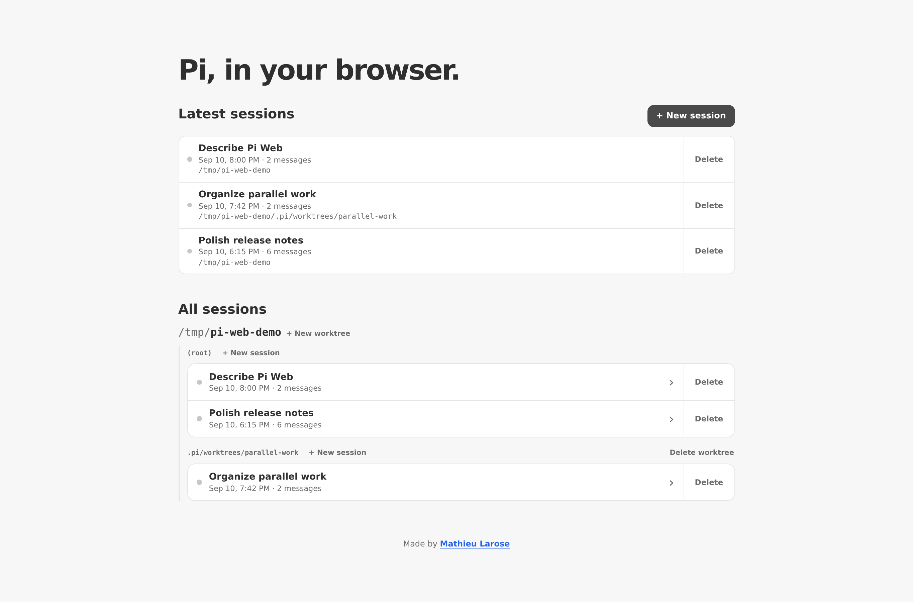
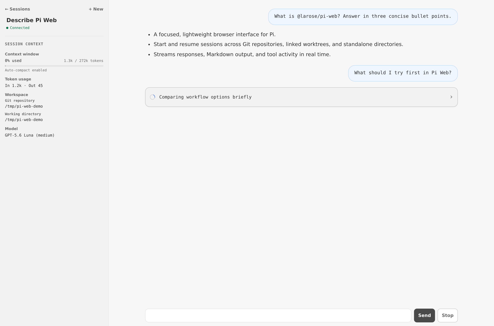

Pi Web
A focused, lightweight web UI for Pi.
@larose/pi-web is a focused, lightweight web UI for Pi.
Run
Node.js 22.19 or newer is required.
$ npx @larose/pi-web
Open http://127.0.0.1:31415.
Features
- Start, resume, rename, and delete Pi sessions.
- Work across Git repositories, linked worktrees, and standalone directories.
- Follow streaming responses, Markdown output, and tool activity in real time.
Screenshots
Sessions

Conversation

Security
Pi Web listens only on 127.0.0.1. Treat browser access as local shell access because Pi's tools use your filesystem permissions and configuration.
See @larose/pi-web on npm for the complete documentation.